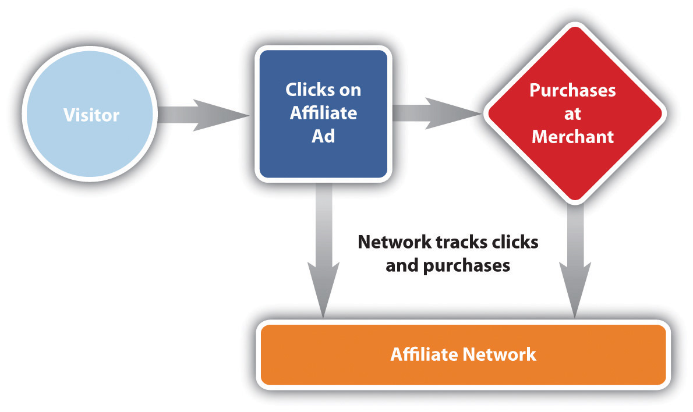
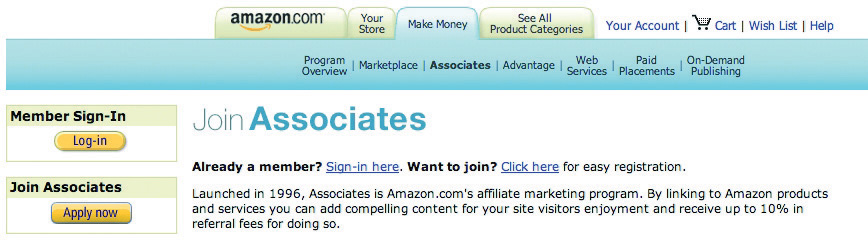
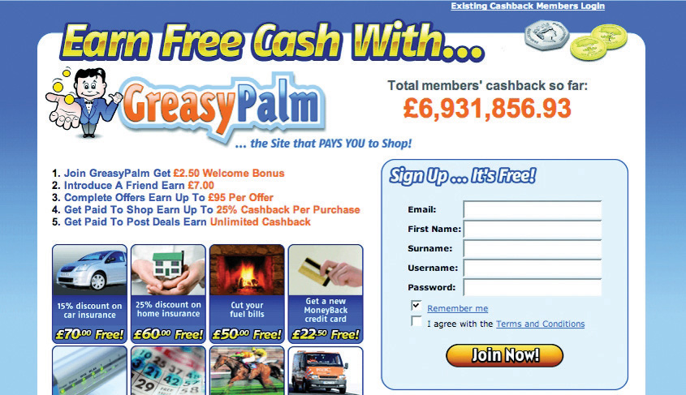
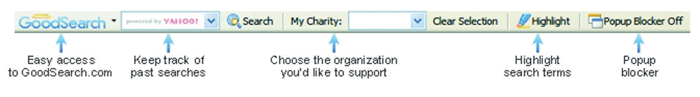
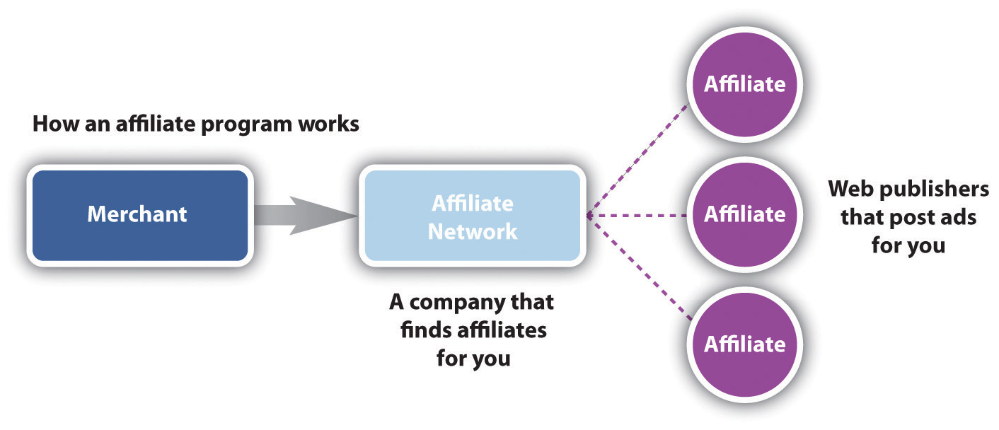
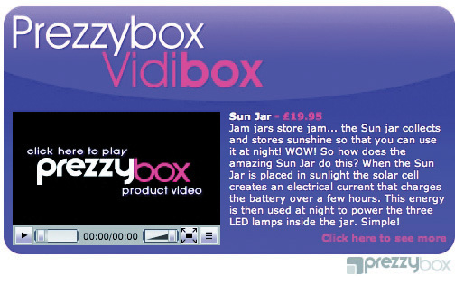

If you recommend a restaurant to a friend, and that friend visits the restaurant because of your recommendation, the restaurant’s revenue will have increased because of your referral. This is “word-of-mouth” marketing. But you, as the referrer, do not see any of the cash benefit that the restaurant does!
Imagine that the restaurant gave you 10 percent of the bill for every person that you referred to the restaurant. They would be paying you a finder’s fee for new customers. There are a number of businesses that market this way offline. Brokers for insurance products are an example, but these referrals can be hard to track. Online, they are very easy to track. This system of reward where compensation is based on referrals is called affiliate marketing and is used to describe this type of marketing in an online environment.
Affiliate marketing is used widely to promote Web sites, and affiliates are rewarded for every visitor, subscriber, or customer provided through their efforts. Because of this, affiliates are sometimes viewed as an extended sales force for a Web site. Affiliates are paid for performance, so affiliate marketing is also referred to as performance marketing.
Like many eMarketing innovations, the beginnings of affiliate marketing are to be found in the adult industry. Cybererotica was probably the first to run an affiliate campaign with its CPC (cost-per-click) program, where it would reward referrers for each click-through to its Web site.
Affiliate marketing moved closer to the mainstream, with programs offered by companies such as CDNow (its BuyWeb program launched in 1994), PC Flowers & Gifts (http://www.pcflowers.com), AutoWeb.com, and a handful of others. But the story that is most well known, and that ensured that affiliate marketing hit mainstream press articles, is that of the Amazon.com Associates Program.
Legend has it that Jeff Bezos (the CEO and founder of Amazon.com) was at a cocktail party, where a woman told him that she wanted to sell books through her Web site. She did not have the infrastructure to sell the books, but Jeff Bezos realized that she could send her targeted traffic to Amazon.com where users could buy books, and she could get paid for each successful referral. From this meeting, Jeff Bezos launched Amazon Associates, the Amazon.com affiliate marketing program. Referrers are rewarded for successful sales that occur as a result of their marketing efforts. The growth experienced by Amazon.com as a result of its affiliate program is well documented and probably accounts for about 40 percent of its revenue.“The Amazon Story,” Alibaba.com, August 26, 2007, http://resources.alibaba.com/topic/191364/The_Amazon_story.htm (accessed June 23, 2010).
According to Econsultancy’s Affiliate Marketing Networks Buyer’s Guide (2006), total sales generated through affiliate networks in 2006 was £2.16 billion in the United Kingdom alone.Econsultancy, Affiliate Marketing Networks Buyer’s Guide (2006), October 2006, http://www.e-consultancy.com/publications/affiliate-marketing-networks-buyers-guide (accessed December 2, 2007). And MarketingSherpa’s research estimates that in 2006, affiliates worldwide earned $6.5 billion in bounty and commissions!Anne Holland, “Affiliate Summit 2006 Wrap-Up Report—Commissions to Reach $6.5 Billion in 2006,” MarketingSherpa, January 11, 2006, https://www.marketingsherpa.com/barrier.php?contentID=3157 (accessed December 2, 2007).
Affiliate networks, which act as intermediaries between affiliates and merchants, came onto the scene in 1996, with the launch of LinkShare and Be Free. Commission Junction, another big player, was launched in 1998 and was bought by ValueClick in 2003 for about $58 million.
The core of affiliate marketingAn agreement between two sites in which one site (the affiliate) agrees to feature content or an ad designed to drive traffic to another site. In return, the affiliate receives a percentage of sales or some other form of compensation generated by that traffic. is a simple process:
Figure 4.1 The Affiliate Marketing Process
However, there are many different ways an affiliate might market a merchant’s offering, there are many different types of action that can be rewarded, and, most importantly, there needs to be some way of keeping track of the whole process.
We’re going to take a look at the different types of actions first of all, then discuss keeping track of it all, and lastly take a look at some of the many means that affiliates use to send customers to merchants, and of course, to make themselves cash.
Affiliate marketing can be used to promote any type of Web site—there just needs to be an agreed-upon action that will result in an affiliate earning commissionThe bounty paid by a merchant to an affiliate when the affiliate makes a successful referral.. Different types of merchants will have different required actions. The actions and the types of commission can be summarized in the following:
Let’s look at an example of each of these actions.
Here the action could be anything from downloading a white paper or software to signing up for a newsletter.
Why do you think a merchant would be willing to offer a bounty for each download?
Merchants that offer CPL commissions are usually those that need to convert a lead into a sale offline. This means that they will generally need to complete the transaction over the phone with the customer or that the process is quite complicated. It is typically insurance companies and banking institutions that will offer this type of commission.
Membership sites that offer a free trial period, such as online DVD rental businesses, can also use this commission structure.
You might be wondering why merchants are willing to pay for a lead instead of only for completed transactions.
How do you think companies can ensure that the leads they get are qualified?
Well, affiliates prefer this model, as they are not in control of the offline conversion process. It is the merchant’s job to be able to complete the transaction. Some merchants may be wary that the leads will not be of a high enough quality. This is why they will usually have conversion targets with which the leads generated need to comply as a means of quality control.
Revenue sharing is the ideal commission structure as both the merchant and the affiliate are rewarded for performance—the more sales, the more revenue generated for the merchant and the more commission for the affiliate. Web sites where a sale can be performed instantly are ideal for revenue sharing. Online retailers and instant online travel agents are perfect examples of merchants who offer a revenue share commission. The affiliate earns a percentage of the sale.
Figure 4.2
Amazon Associates is a popular revenue share affiliate program.
CPC commission is rarely used and is primarily a way of driving large volumes of trafficThis refers to the visitors that visit a Web site., usually to a new site. An affiliate would be awarded commission for every click-through to the merchant Web site. Although this type of commission was prevalent in the very early days of affiliate marketing, it has been largely abandoned due to click fraud. Click fraud occurs when a link is clicked on by a bot, or someone paid to click on links (see Chapter 7 "Pay per Click Advertising").
We have seen that there are different types of actions that can result in commissions being awarded and that these actions usually suit the Web site that is being promoted. This means that any industry that is online can most likely be promoted through affiliate marketing.
Affiliates have many options open to them to promote merchants’ Web sites. But before we get to that, we need to take a look at tracking—the thread that holds it all together.
There are different types of commissions whose uses are based on the merchant’s industry:
The key to affiliate marketing is being able to track the whole process, from potential customers being sent to a Web site to completed action, so that the merchant is able to award the correct affiliate with the correct commission. This really is the crux of affiliate marketing.
Specialized affiliate tracking software is used to track affiliate campaigns, and this is usually supplied and supported by the affiliate network. Often, the merchant and the affiliate will also use their own tracking software to make sure that there are no major discrepancies.
Affiliates send traffic to merchants through links or uniform resource locators (URLs)A unique address that identifies a Web site., and the tracking software allows each affiliate to have a unique identifier in the URL. These links set a cookieParcels of text sent by a server to a Web browser and then sent back unchanged by the browser each time it accesses that server. Cookies are used for authenticating, tracking, and maintaining specific information about users, such as site preferences or the contents of their electronic shopping carts. on the customer’s computer, which allows the software to track the sale.
For example, here is the URL of a product on a retailer’s Web site:
http://www.firebox.com/product/1201
Here is the URL for the same product with affiliate tracking:
http://scripts.affiliatefuture.com/AFClick.asp?affiliateID=238&merchantID= 214&programID=3897&mediaID=0&tracking=cube_world&url=http://www.firebox.com/index.html?dir=firebox&action=product&pid=1201
You can see some of the information being recorded. It has been shown in bold in the URL and includes the following:
Can you spot the original URL in the tracking URL??
Do you want to see what cookies have been set on your browser? If you use Mozilla Firefox, go to Tools > Options > Privacy, and click on “Show Cookies.” You can see all the domains for which cookies have been set, and you can see when the cookie will expire. You can delete cookies if you want to. For Internet Explorer, go to Tools > Internet Options > General, and click on “Settings” under “Temporary Internet Files.” Click on “View Files” to see cookies set and other temporary Internet files.
When the customer completes the required action on the merchant’s Web site, the cookie will allow the tracking software to collect the information needed to award the commission. For example, if a customer were to use an affiliate link to purchase a gift from a merchant (using the same URL as before as an example), the following information would be collected:
All this information will allow the merchant to confirm that the sale is valid, as well as the amount of commission that is due, without ever releasing any of the customer’s personal information.
Affiliate tracking software collects information even if no action is completed. This is vital to the affiliates and to the merchants to see where they can optimize their campaign.
Information collected includes the following:
All this information helps to build up data in order to strengthen the campaign.
Figure 4.3 Table Showing Data Used to Determine the Success of an Affiliate Campaign

What data would need to be collected? Does this differ for different types of affiliate marketing? Think of e-mail marketing versus PPC (pay per click), for example.
Affiliates will use this information to determine the success of their marketing efforts. Remember that affiliates invest money into marketing various merchants, and they only get rewarded on commission. An affiliate will use the above information to determine whether or not to promote a merchant and how much they should invest in promoting a particular merchant.
Merchants can use the information on their campaign to determine how best to optimize. For example, if a particular type of banner seems to do better than others, they could use that to improve other banners that they offer.
If you follow the steps mentioned above to see what cookies have been set on your browser, you’ll notice that there are a lot of different expiration periods for cookies. Cookies are not just used for affiliate marketing. They are also used to store information so that a Web site “remembers” who you are next time you visit it. The domain owner gets to determine the length of time a cookie should last. This is called the cookie periodThe length of time a cookie should last, often set by the merchant..
When it comes to affiliate marketing, it is up to the merchant to decide what the cookie period should be. The affiliate is only awarded commission should the desired action take place within the cookie period. Some merchants make the cookie last for the sessionThe session of activity that a user with a unique cookie spends on a Web site during a specified period of time only (i.e., if the user only makes purchases the following day, no commission is rewarded), whereas the standard cookie period for affiliate marketing is thirty to sixty days. Some merchants offer 999-day cookies, or even lifetime cookies.
There are merchants who offer what is called an affiliate lock-inThe first affiliate to refer the customer earns commission on the lifetime of the customer. Every purchase that the customer makes will earn the affiliate commission.. Here, the first affiliate to refer the customer earns commission for as long as the customer remains a customer; every purchase that the customer makes will earn the affiliate commission.
Do you think there is an advantage to a 999-day cookie? What is the difference between a 999-day cookie and a lock-in?
Affiliates tend to prefer a longer cookie period it increases the likelihood of being awarded commission.
Successful tracking is fundamental to any eMarketing campaign, and especially so to affiliate marketing. As affiliates are only paid for performance, should anything go wrong in the tracking process, it is the affiliates that suffer. The merchant will still get the desired sales, but the affiliates won’t be rewarded.
So it is good to bear in mind some of the problems that can be faced with tracking.
With so many affiliates, it is not uncommon for a potential customer to visit a merchant’s Web site through the links of many different affiliates before finally making a purchase. Who do you think should receive the commission?
For example, a user sees a Web site banner promoting a weekend in Paris, booked with Eurostar. The user clicks on that banner and checks out the deals on the Eurostar Web site. A cookie is set, as the first Web site is an affiliate of Eurostar.
He doesn’t book right away, but after chatting to his girlfriend, they decide to book the trip. He goes to Google, searches for “Eurostar weekend in Paris,” and clicks on one of the PPC (pay-per-click) advertisements. This has also been placed by an affiliate, but a different one.
This time he books the trip. But which affiliate should be rewarded the commission?
It has become standard practice that the most recent referral is awarded the commission, though there are some merchants who also offer compensation to other affiliates involved in sale process. In the previous example, the affiliate who placed the PPC advertisement would get the commission for this sale.
Consumers sometimes get anxious when they hear things like “tracking” and “collecting information,” so they delete cookies from their computer. If this happens, then the sale will never be attributed to the affiliate. This practice, however, does not seem to have a drastic effect on numbers, so most affiliates will still calculate this into their return on investment (ROI)The ratio of cost to profit (e.g., advertising spending as a percentage of the revenue that it generates)..
Merchants will often use some kind of tracking so that they can better optimize their own marketing efforts, or a merchant may make some kind of technical change to their Web site. It is crucial that any of these changes are tested first with the tracking software to make sure that they do not create any conflicts. It is generally accepted practice that even if it is a merchant’s marketing effort that is responsible for the final sale, the affiliate still gets the commission if it is within the affiliate’s cookie period.
If the customer completes the action but does not do so online, the affiliate will not receive commission. So, if a customer visits an online retailer through an affiliate link but places an order over the phone, the affiliate will miss out on commission.
Affiliates are online marketers who are paid on a performance basis. Every type of marketing strategy will be found in the affiliate world, and affiliates can often be seen at the forefront of breaking technology and applying it to marketing strategies.
The basic aim of an affiliate is to send targeted traffic (that means customers who are very likely to perform the desired action) to a particular merchant’s Web site. Affiliates may promote as many merchants in as many industries with as many tactics as they wish, but usually affiliates will start to specialize.
Most of the tactics will be the same as those that the merchant employs but will reach a different part of the Internet population. Effective tracking takes care of any overlap and will help a merchant to adjust their spending for a most effective return on investment (ROI). The main types of affiliates can be broken up into the following:
Figure 4.4
GreasyPalm.co.uk is a cash-back site that is an affiliate.
Affiliate marketing came to the fore as a way for personal Web sites to make money, though this now forms a small part of the marketing mix. Affiliate marketing does still provide some income for these Web sites. However, we will focus on those endeavors that are created purely for affiliate marketing.
Content and niche sites are Web sites created around a specific topic, and any products promoted will carry affiliate tracking. For example, an affiliate might create a site dedicated to digital cameras, with tips and downloads to help you get the most out of your camera. It could review a number of different cameras and offer links to purchase those cameras online. All those links will be affiliate links.
Seasonality is also an important consideration for content sites. Web sites can be created specifically for Christmas, Mother’s Day, and many more key retail seasons.
Some affiliates run large opt-in e-mail lists, and they market particular merchant offers through their e-mail newsletters. Some renegade affiliates use spam e-mail to promote merchant offers, but as affiliate marketing has matured, there are usually terms and conditions to prevent such promotion.
As affiliates earn a percentage of a sale, some affiliates “split” this with the customer and create cash-back or points-based shopping sites. There are also some that donate a percentage of the commission to a charity.
Some of the most successful affiliate marketers are those who promote various merchants through paid search PPC advertising on search engines. These affiliates seek to find the highest earnings per click (EPC)Based on historical data and conversions rates, what an affiliate can expect to earn per click. for the lowest cost per click (CPC), this is also referred to as search arbitrage.
Arbitrage is the practice of taking advantage of a price differential between two or more markets. It’s a term that is usually used in financial trading. Some might say that search affiliates trade in PPC advertisements—their revenue is the EPC – CPC.
Affiliates will find any means possible to promote offers. As new products and platforms become available, marketers and affiliate marketers find new ways to make them work. Some other examples of affiliates promoting merchants include the following:
All that is required is that the click-through to the merchant’s Web site is tracked.
Figure 4.5
GoodSearch.com offers a toolbar. Proceeds from affiliate links are shared with charities.
Affiliates use a number of means to promote merchants. These include the following:
As well as the affiliate and the merchant, there is a generally a very important third party in the affiliate marketing mix—the affiliate network.
While some small affiliate programs and some very large affiliate programs (such as Amazon Associates) are run by the merchant, most merchants opt to use an affiliate network to provide most of the technical solutions required for an affiliate program.
Affiliate networks provide tracking solutions, reporting on programs to both affiliates and merchants, hosting of creative banners, commission payment options, and support to both affiliates and merchants. Affiliate networks have many affiliates, and many merchants, signed up to them, so they are ideal sources for recruiting affiliates if you are a merchant or for finding merchants to promote if you are an affiliate. Affiliate networks provide a one-payment solution to merchants, as the merchants will be invoiced for all the commission collectively owed, which is then dispersed to the affiliates.
Figure 4.6
Affiliate networks act as a gateway between merchants and affiliates.
Affiliate networks usually charge the affiliates nothing to join. They can charge a merchant a setup fee, which will cover the cost, making sure that the tracking solution is successfully integrated, and can charge a monthly management fee, depending on the level of support offered to the merchant. Affiliate networks usually charge the merchant a percentage of the commission earned by the affiliate (called a commission overrideAffiliate networks usually charge the merchant a percentage of the commission earned by the affiliate.), so that there are incentives for the networks if they perform well. As a rough guide, this is typically 30 percent of the commission rewarded to the affiliate.
Some leading affiliate networks include the following:
Affiliate marketing today forms a fundamental part of most e-retailers’ strategies. So what tools does a merchant need to have a successful program?
Any retailer should have a product feedA way of providing information about the products on a merchant’s Web site in a way that breaks up the information easily, and is standardized. A product feed will be either XML (extensible markup language) or CSV (comma-separated values) and will probably contain the following information for each product: product name, product URL (uniform resource locator), product picture, product price, description, shipping price, and stock status., either XML (extensible markup language) or CSV (comma-separated values). A product feed is a way to provide information about the products on a merchant’s Web site in a way that breaks up the information easily and is standardized. A product feed will probably contain the following information for each product:
Affiliates, particularly search affiliates, can use this to promote individual products.
A product feed is made available on a simple URL and displays content that affiliates can use in their campaigns.
Merchants need to create a set of banners and buttons that can be placed on affiliate Web sites. At a minimum, the following sizes should be available:
Having interactive banners, such as gift wizards or product searches, means that potential customers can interact with the brand before they even come through to the merchant’s Web site.
If the merchant or the affiliate network hosts the banners, the banners can be updated without the affiliates having to do anything. This means that the message can be kept current across all the merchant campaigns.
Merchants need to consider who will be keeping tabs on and driving the success of the affiliate campaign. Merchants might be able to run the program in-house with current staffing resources or can hire an affiliate manager. It is also possible to outsource the management of the affiliate program to an agency that specializes in affiliate marketing.
Lastly, merchants need to keep in touch with their affiliates the networks have channels for communicating with a large number of affiliates, but it is also worthwhile to interact on some of the affiliate marketing forums in order to keep informed.
Affiliates need to get to grips with the spectrum of eMarketing tactics, and choose what works best for them. Paid search affiliates will focus on PPC (pay-per-click) tactics, while affiliates running custom-made Web sites will probably put a lot of energy into SEO (search engine optimization). It depends on where their talent lies and where they see a gap in the market.
For affiliates, keeping up to date with merchants, other affiliates, and the industry is probably the key to growth. That, and finding the time to put it all into practice! Joining forums and keeping tabs on industry leaders will help do just that.
Some notable affiliate marketing forums include the following:
Affiliate marketing is becoming an integral part of eMarketing—how would you go about setting up and launching a new campaign without it? Affiliate marketing should grow your business, and grow with your business, so it’s important to plan and prepare for long-lasting success.
First, you need a clear idea of your business’s identity, goals and unique selling points. No doubt you will have competitors that affiliates already promote; you need to be able to give affiliates compelling reasons why your program is better.
With this in mind, you need to determine the goal of your affiliate marketing. If you are a new business, you might just want to build traffic and brand awareness. Depending on what industry you are in, your goal could be new customer leads or it could be increased retail sales. Make sure you are clear on what you want and that your Web site reflects this.
Then, you need to decide whether you are going to run your own program, from affiliate recruitment to tracking and paying, or whether you are going to use an affiliate network. If you are using an affiliate network, you’ll need to do your homework on the best network or networks to join. Look at the following:
You’ll also need to decide whether you will hire an affiliate manager to run your program, whether you might outsource your program management, or whether you already have the resources to run the program yourself. You need to do a full competitor analysis, focusing on your competitors’ affiliate programs. Look at the following:
Prepare the basics that you’ll need to start a program:
Using your competitor research, decide on commission, commission tiers, cookie period, and incentives.
Test the tracking software on your site and make sure that it does not conflict with any other tracking you are using.
Recruit affiliates. Use your competitor analysis to contact potential affiliates, promote your program through affiliate forums, use your affiliate network contact channels to approach affiliates, and approach sites that you think fit your user demographic.
And it doesn’t all stop once you’ve launched! The key to successful affiliate marketing is ongoing communication and marketing to your affiliates. You need to make sure you are on top of validating sales, so they get their commission. You need to ensure that you stay competitive with your commission offering, and you need to keep your affiliates up to date with any information that could make them send more customers your way—more revenue for you and thus more cash for them!
While affiliate marketing certainly deserves increasing recognition for its key role in growth, it is still a young industry with all the growing pains that that involves.
The following issues hold people back from fully utilizing affiliate marketing tactics:
But of course, there are many benefits to affiliate marketing:
Cons to affiliate marketing include the following:
Pros to affiliate marketing include the following:
Prezzybox.com is a UK online retailer in a very competitive market: gifts and gadgets. With many other players in the market competing for the same customers, Prezzybox.com runs a successful affiliate program that sees them leading the way in performance marketing.
Affiliate marketing has played a sizeable role in the growth of Prezzybox.com and now accounts for about 35 percent of sales. Affiliate marketing has contributed on two levels, namely, brand growth and sales generation. In fact, Prezzybox.com has won several industry awards for its affiliate program. In 2008, these awards included “Best Use of Creative” and “Best Merchant Innovation.”
A substantial element of affiliate marketing is managing relationships with affiliates. The Prezzybox.com affiliate program and its affiliate managers have been voted best by affiliates, and its affiliate managers are regularly invited to speak at industry events and conferences. How have they achieved this?
Figure 4.7
Vidibox is a new content item for affiliates of Prezzybox.com.
Source: Used by permission from Prezzybox.com.
Prezzybox.com has a wide affiliate base and constantly recruits new affiliates via affiliate get-togethers, affiliate forums and blogs, and through keyword searches on Google. Its super affiliates, those affiliates that drive the majority of affiliate sales, account for about 1 percent of all affiliates. Zak Edwards, managing director of Prezzybox.com, says, “We tend to offer all affiliates the same opportunities for promotion, but obviously focus a lot of our attention on our super affiliates.”Zak Edwards, personal communication via e-mail with Sarah Blake.
Super affiliates can be given extra commission as an incentive, and the affiliate managers ensure that these affiliates are up to date with all the latest offers, new products, and promotions. Prezzybox.com communicates these details to all their affiliates as well. However, they use mass communication for all their affiliates and one-on-one communication, such as phone calls or instant messages, with their super affiliates. One of the features of the affiliate program is an affiliate resource center, which has extensive support information for affiliates such as real-time product bestseller reports.
In 2007, Prezzybox.com launched a brand-new content item for its affiliates: Vidibox. These are video content units—banners that contain a product video and a link to that product on the Prezzybox.com Web site. These video content units were very successful because the content was unique in the affiliate arena and so had a large take-up among affiliates. Being a more interesting way of displaying content, the Vidiboxes attracted a higher click-through rate, which again made them more appealing to affiliates.
Prezzybox.com’s commitment to an innovative and successful affiliate program has seen it earn immense respect in the affiliate arena, which is translating into ongoing, healthy sales growth. In fact, Prezzybox.com has outgrown its offices twice in six years and looks set to maintain this successful track record.
Shawn Collins, “History of Affiliate Marketing,” ClickZ, November 10, 2000, http://www.clickz.com/showPage.html?page=832131 (accessed December 2, 2007).
My Turnkey Business, http://www.myturnkeybusiness.com (accessed April 7, 2008).
Stefanie Olsen, “ValueClick Buys Marketer Commission Junction,” CNET, October 10, 2003, http://www.news.com/2100-1024-5090014.html (accessed December 2, 2007).